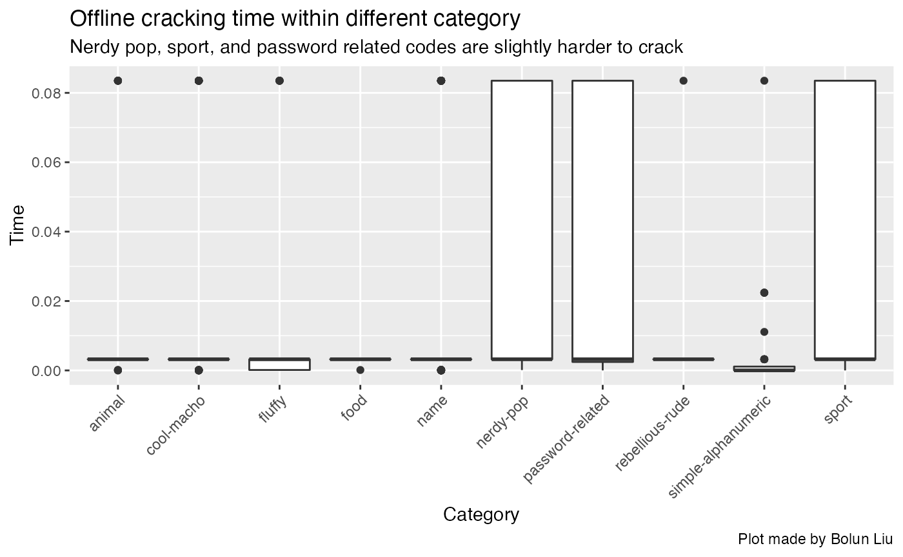
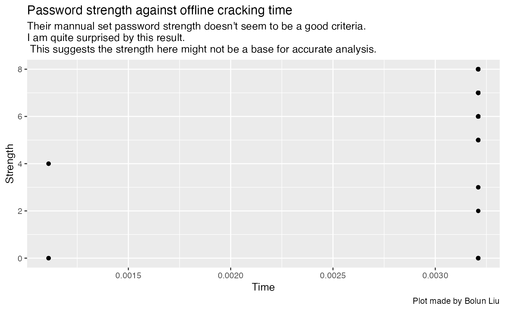
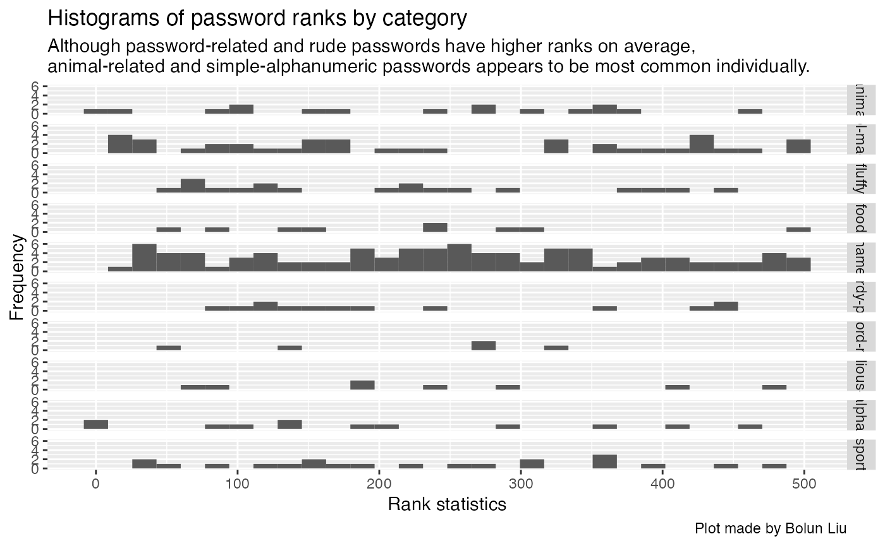

Question
-Among all password types, which category is the easiest to be cracked? -Is the strength of the password related to the time to crack it?
Data link with dictionary
This is a data set on a variety of most commonly used passwords sourced from Information is Beautiful. The data and the dictionary can be found from
https://github.com/rfordatascience/tidytuesday/tree/master/data/2020/2020-01-14.
Data loading & wrangling
main_dir <- here()
sub_dir <- "data"
if (file.exists(sub_dir)){
# specifying the working directory
setwd(file.path(main_dir, sub_dir))
} else {
# create a new sub directory inside
# the main path
dir.create(file.path(main_dir, sub_dir))
# specifying the working directory
setwd(file.path(main_dir, sub_dir))
}
if(!file.exists(here("data","passwords.RDS"))){
passwords <- readr::read_csv('https://raw.githubusercontent.com/rfordatascience/tidytuesday/master/data/2020/2020-01-14/passwords.csv')
# save the files to RDS objects
saveRDS(passwords, file = "passwords.RDS")
}
passwords <- readRDS(paste0(file.path(main_dir, sub_dir), "/passwords.RDS"))
x.1 <- passwords %>% drop_na()
x.2 <- x.1 %>% filter(offline_crack_sec < 0.5)
# x.2$category <- as.factor(x.2$category)
ggplot(x.2) + geom_boxplot(aes(y = offline_crack_sec, x = category)) +
labs(title = "Offline cracking time within different category",
subtitle = "Nerdy pop, sport, and password related codes are slightly harder to crack",
caption = "Plot made by Bolun Liu") +
xlab("Category") + ylab("Time") + theme(axis.text.x = element_text(angle = 45, hjust=1))
x.3 <- x.1 %>% filter(str_detect(time_unit, "day"))
names <- rep("simple", length(which(x.3$category == "simple-alphanumeric")))
set_names(x.3$category[which(x.3$category == "simple-alphanumeric")], names)## simple simple simple
## "simple-alphanumeric" "simple-alphanumeric" "simple-alphanumeric"
## simple simple simple
## "simple-alphanumeric" "simple-alphanumeric" "simple-alphanumeric"
## simple simple simple
## "simple-alphanumeric" "simple-alphanumeric" "simple-alphanumeric"
## simple simple simple
## "simple-alphanumeric" "simple-alphanumeric" "simple-alphanumeric"
ggplot(x.3) + geom_point(aes(y = strength, x = offline_crack_sec)) +
labs(title = "Password strength against offline cracking time",
subtitle = "Their mannual set password strength doesn't seem to be a good criteria. \nI am quite surprised by this result.\n This suggests the strength here might not be a base for accurate analysis.",
caption = "Plot made by Bolun Liu") +
xlab("Time") + ylab("Strength")
## $animal
## [1] 257.5517
##
## $`cool-macho`
## [1] 259.7975
##
## $fluffy
## [1] 240.1136
##
## $food
## [1] 239.4545
##
## $name
## [1] 264.6557
##
## $`nerdy-pop`
## [1] 272.1667
##
## $`password-related`
## [1] 169.6
##
## $`rebellious-rude`
## [1] 215.0909
##
## $`simple-alphanumeric`
## [1] 231.4098
##
## $sport
## [1] 227.973
x.5 <- x.3 %>% select(password, category, rank, strength)
ggplot(data = x.5) + geom_histogram(aes(x = rank)) + facet_grid(rows = vars(category)) +
labs(title = "Histograms of password ranks by category",
subtitle = "Although password-related and rude passwords have higher ranks on average,\nanimal-related and simple-alphanumeric passwords appears to be most common individually.",
caption = "Plot made by Bolun Liu") +
xlab("Rank statistics") + ylab("Frequency")## `stat_bin()` using `bins = 30`. Pick better value with `binwidth`.
n<-rsampcalc(N=500, e=1, ci=95, p=0.5, over=0)
n## [1] 476
strata <- ssampcalc(df=x.1, n=n, strata=category, over=0)
strata## # A tibble: 10 × 4
## category Nh wt[,1] nh[,1]
## <chr> <int> <dbl> <dbl>
## 1 animal 29 0.058 28
## 2 cool-macho 79 0.158 75
## 3 fluffy 44 0.088 42
## 4 food 11 0.022 10
## 5 name 183 0.366 174
## 6 nerdy-pop 30 0.06 29
## 7 password-related 15 0.03 14
## 8 rebellious-rude 11 0.022 10
## 9 simple-alphanumeric 61 0.122 58
## 10 sport 37 0.074 35Result
From average rank statistics, category password-related (“password”) and rebellious-rude (“biteme”) type passwords are the most common. Individually, simple-alphanumeric code such as “1111” and “aaaa” are the most popular. Among all category, nerdy-pop, sport, and password-related codes are relatively harder to crack, but the different can be negligble. Moreover, the strength in the data set is not related to the cracking time, indicating it is not a good candidate for data analysis.
If I were to sample from the data set that so that I can recover the sample mean with a marginal error of 1 and a 95% CI, the effective sample size is 476, which is calculated from rsampcalc(). If I would to sample within different strata (here, catagory) by their sample sizes, ssampcalc() gives a reasonable sampling scheme.